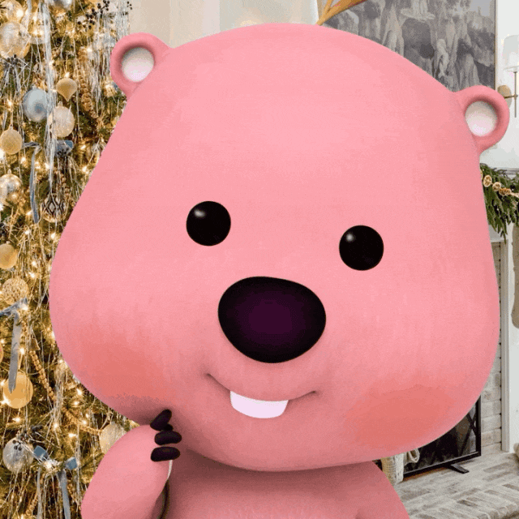
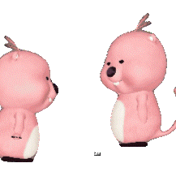
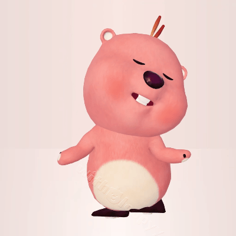

interactive note
Five sweet notes from Loopy.
Tap a star. Each one opens a tiny pink message.
loopy pink archive
Romantic, soft, and a little silly. Tap around, browse the Loopy collection, and keep it personal.
Loopy images below are marked as fan-use only, non-commercial, and kept here as a personal collection.

mood
Pink. Cozy. Playful.
now playing
Loopy says hi.
interactive note
Tap a star. Each one opens a tiny pink message.
ambient control
Tune the pink glow
72%
Drag on mobile or desktop to brighten the romantic glow.
little caption
If cuteness had a room, Loopy would already live there.
loopy archive
A small local gallery for the Korean viral character Loopy, restyled into this pink romantic page.
Notice
Loopy image assets are shown here for personal collection and fan appreciation only.
Non-commercial use only. Please remove or replace before any public commercial usage.


small questions
01 / 03
Keep this page extra pink?
Every answer keeps the page soft and cute anyway.
response
Loopy is listening.
Pick either side and the room will soften with you.